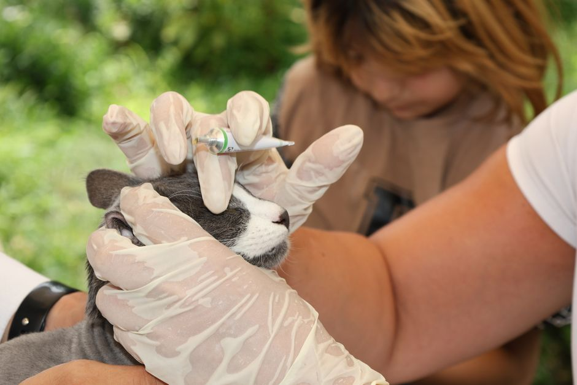
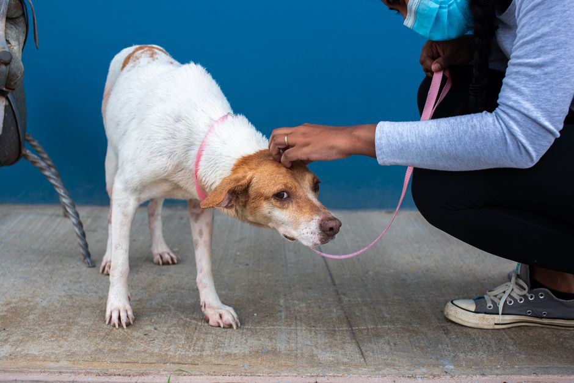

Quelles vaccinations sont nécessaires pour garantir la santé de votre animal

Photo: Tahir Xəlfəquliyev / Pexels
Conseils Pratiques pour Assurer la Santé Vaccinale de Votre Animal
La vaccination est un outil essentiel pour prévenir de nombreuses maladies chez les animaux de compagnie. Cependant, il est important de connaître les vaccinations nécessaires selon l'espèce animale, son environnement et son mode de vie. Voici un guide détaillé pour vous aider à garantir la santé de votre animal.
Vaccinations pour Chats
La Toxoplasmose
La toxoplasmose est une maladie grave pouvant entraîner des problèmes de santé importants chez le chat, y compris des troubles de l'appétit, des vomissements, et dans certains cas, des problèmes neurologiques. Elle peut également être transmise à l'homme, ce qui est particulièrement dangereux pour les femmes enceintes. La vaccination antitoxoplasmose n'est pas obligatoire mais est recommandée pour les chats qui sortent.
La FIV et la FELV
La FIV (féline immunodéficience virale) et la FELV (féline leucémie virale) sont des maladies infectieuses graves qui peuvent se propager entre les chats. La vaccination est recommandée pour tous les chats, surtout ceux qui sortent. Ces vaccins sont particulièrement importants car ils peuvent aider à prévenir la transmission de ces maladies.
Vaccinations pour Chiens

Photo: Dominik Gryzbon / Pexels
La Rabies
La vaccination antirabique est obligatoire par la loi dans de nombreux pays. La rabies est une maladie virent et presque toujours mortelle qui peut être transmise à l'homme par le mordant d'un chien. Elle est particulièrement prévalente dans certaines régions.
La Distérosie et l'Adénorinite
La distérosie et l'adénorinite sont deux maladies virales sévères qui peuvent entraîner de graves problèmes de santé chez le chien. La distérosie peut causer des problèmes respiratoires, tandis que l'adénorinite peut entraîner des troubles cardiaques. Ces deux maladies sont transmises par l'exposition à des chiens malades. La vaccination est donc essentielle pour prévenir ces maladies.
Vaccinations pour Rats et Souris
La RCP
La RCP (réussite cérébrospatiale) est une maladie infectieuse fatale chez les rongeurs. Elle est causée par un virus et peut se propager rapidement dans une population d'animaux. La vaccination antirCP est fortement recommandée pour tous les rats et souris. Elle est généralement réalisée par une seule injection qui offre une protection à vie.
Vaccinations pour Chevaux
La Pneumonie Equine
La pneumonie est une maladie respiratoire sévère chez les chevaux. La vaccination contre cette maladie est recommandée pour tous les chevaux, surtout ceux qui font beaucoup d'exercice ou qui se trouvent dans des groupes sociaux.
La Rabies et la Tetanos
La vaccination antirabique et antitetanique est recommandée pour tous les chevaux. La rabies est transmise par les animaux malades et la tetanos est une maladie bactérienne qui peut être très dangereuse.
Vaccinations pour Oiseaux
La Maladie d'Exotic
La maladie d'Exotic est une maladie virale sévère qui peut être mortelle chez les oiseaux. La vaccination est recommandée pour tous les oiseaux, surtout ceux qui sortent ou vivent en environnement social.
La Maladie de Psittacose
La maladie de Psittacose est une maladie bactérienne qui peut être transmise à l'homme. La vaccination est recommandée pour tous les oiseaux, surtout ceux qui sortent ou vivent en environnement social.
Considérations Importantes
-
Planifiez vos vaccinations : Consultez régulièrement votre vétérinaire pour discuter des vaccinations nécessaires pour votre animal. Il peut y avoir des changements dans les recommandations selon la région et la situation individuelle.
-
Choisissez les vaccins adaptés : Certains vaccins sont disponibles sous forme de combinaisons (comme pour les chiens), ce qui peut simplifier le processus de vaccination et réduire le nombre d'injectables.
-
Observez les effets secondaires : Bien que rares, les effets secondaires tels que de la fièvre, de la faiblesse ou une réaction locale à l'injection peuvent se produire. Si vous remarquez quelque chose d'inhabituel, contactez votre vétérinaire.
-
Gardez un historique des vaccinations : Gardez un registre des vaccinations de votre animal pour assurer une continuité de soins et pour être en mesure de fournir ces informations aux nouvelles installations vétérinaires.
En conclusion, la vaccination est une partie cruciale de la prévention de la maladie et de la santé globale de votre animal. Chaque animal a des besoins différents, et il est important de travailler avec un vétérinaire qualifié pour élaborer un plan de vaccination adapté à votre animal de compagnie.
Produits recommandés
En tant que Partenaire Amazon, je réalise un bénéfice sur les achats remplissant les conditions requises.